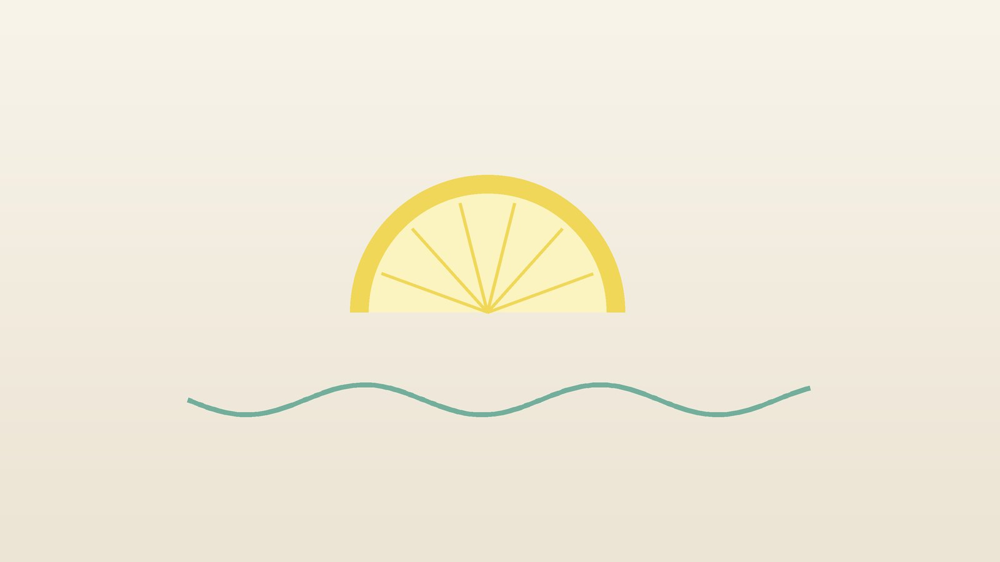

건강 칼럼 · 인천 입덧 한의원
임신 초기 울렁거림이 너무 힘들다면, 입덧 한방 관리

나의 입덧, 이 정도인가요?
- 아침뿐 아니라 하루 종일 울렁거린다
- 하루에 세 번 이상 토한다
- 밥 냄새, 냉장고 냄새만 맡아도 속이 뒤집힌다
- 입덧이 시작된 뒤 몸무게가 줄었다
- 소변 색이 진하고 횟수가 눈에 띄게 줄었다
- 울렁거림 때문에 출근이나 집안일을 거의 못 한다
이 체크리스트는 진단 도구가 아니라 상담이 필요한지 가늠해 보는 참고용입니다.
입덧은 왜 생기고, 언제 가라앉나요?
입덧의 정확한 원인은 아직 다 밝혀지지 않았지만, 임신 초기에 빠르게 늘어나는 융모성 생식샘 자극 호르몬(hCG)과 에스트로겐, 그리고 냄새에 예민해지는 변화가 관련된다고 알려져 있습니다. 쌍둥이 임신이거나 이전 임신에서 입덧이 심했던 분, 평소 멀미나 편두통이 있는 분에게 더 심하게 나타나는 경향이 있습니다.
미국산부인과학회(ACOG) 진료지침은 입덧을 가볍게 넘기지 말고 일찍 관리할수록 심해지는 것을 막을 수 있다고 강조합니다. 첫 단계로 식사 방법을 바꾸고 생강을 활용해 볼 수 있으며, 약물로는 비타민 B6(피리독신) 단독 또는 독실라민과의 복합제를 먼저 권합니다. 손목 안쪽의 내관 혈 지압도 언급하지만, 연구 결과가 일정하지 않다고 정리합니다. 구토가 지속되어 체중이 임신 전보다 5% 이상 줄고, 탈수와 전해질 이상이 생기면 임신오조(임신과다구토)로 보고 입원해 수액과 약물 치료를 받습니다.
바로 산부인과나 응급실로 가야 하는 신호
- 24시간 넘게 물이나 음식을 전혀 넘기지 못한다
- 소변이 하루 몇 번 안 나오고 색이 진하다
- 일어서면 어지럽고 쓰러질 것 같다
- 몸무게가 임신 전보다 눈에 띄게 줄었다
- 토한 것에 피가 섞이거나 커피 찌꺼기 같은 것이 나온다
- 배가 심하게 아프거나 열이 나거나, 임신 10주 이후에 처음 구토가 시작됐다
마지막 경우는 입덧이 아니라 위장염, 담낭염, 갑상선 질환, 요로 감염 같은 다른 원인일 수 있어 확인이 필요합니다. 임신오조는 수액으로 탈수를 바로잡는 것이 우선이며, 한방 관리는 그 이후에 고려합니다.
한의학은 입덧을 어떻게 보나요?
한의학에서는 임신 초기의 메스꺼움과 구토를 오조(惡阻) 또는 자병(子病)이라 불렀습니다. 한나라 장중경의 『금궤요략(金匱要略)』 부인임신병(婦人妊娠病) 편에는 '임신하여 구토가 그치지 않으면(妊娠嘔吐不止)' 쓰는 처방이 실려 있어, 입덧이 2천 년 전에도 따로 다루어졌음을 알 수 있습니다.
원리로 보면 임신이 되면 생리가 멈추고 혈이 아기를 기르는 데 모이면서, 아랫배를 지나는 충맥(衝脈)의 기운이 왕성해져 위로 치밀어 오른다고 보았습니다. 이때 소화를 맡은 비위가 약하면 거꾸로 오르는 기운을 막지 못해 울렁거림과 구토가 생기고, 평소 담음(痰飮)이 많거나 스트레스로 간의 기운이 막힌 분은 더 심하게 겪는다고 해석했습니다. 그래서 오조의 관리는 거꾸로 오르는 위의 기운을 가만히 내리는 데 초점을 두되, 아기를 보호하기 위해 약재와 자극을 아주 조심스럽게 고릅니다.
나의 입덧은 어떤 유형일까?
1. 비위허약(脾胃虛弱) 속이 약해 울렁이는 유형
- 이런 분에게 많아요
- 평소 소화가 약하고 마른 분
- 나타나는 모습
- 공복에 더 메스껍고 먹으면 조금 낫지만 많이 못 먹는다
- 함께 오는 몸의 신호
- 기운 없음, 침이 고임, 묽은 변
- 진찰에서 보이는 모습
- 혀가 옅고 설태가 얇고 흼
- 치료 방향
- 비위를 돕고 거꾸로 오르는 기운을 내리는 방향 (향사육군자탕 계열을 임신 중 안전한 약재로)
- 오늘부터 해 볼 것
- 배가 완전히 비지 않게 크래커나 누룽지를 머리맡에 두세요.
2. 간위불화(肝胃不和) 신물이 올라오는 유형
- 이런 분에게 많아요
- 예민하고 긴장을 많이 하는 분
- 나타나는 모습
- 쓴물이나 신물을 토하고 가슴이 답답하다
- 함께 오는 몸의 신호
- 한숨, 옆구리 답답함, 두통
- 진찰에서 보이는 모습
- 혀 가장자리가 붉고 맥이 팽팽함
- 치료 방향
- 간의 기운을 풀고 위를 편하게 하는 방향 (소반하가복령탕·귤피죽여탕 계열을 신중히)
- 오늘부터 해 볼 것
- 신 과일이나 차가운 음식이 편한지 조금씩 시험해 보세요.
3. 담습(痰濕) 가래 섞어 토하는 유형
- 이런 분에게 많아요
- 체격이 있고 평소 몸이 무거운 분
- 나타나는 모습
- 끈적한 침이나 가래 같은 것을 토하고 가슴이 꽉 막힌 듯하다
- 함께 오는 몸의 신호
- 어지럼, 졸림, 식욕 없음
- 진찰에서 보이는 모습
- 혀가 크고 설태가 두껍고 미끄러움
- 치료 방향
- 담을 삭이고 위를 가라앉히는 방향 (이진탕 계열을 소량으로)
- 오늘부터 해 볼 것
- 기름진 음식과 단 음료를 피하고 담백하게 드세요.
4. 기음양허(氣陰兩虛) 오래 토해 지친 유형
- 이런 분에게 많아요
- 입덧이 길어져 체중이 줄고 기력이 떨어진 분
- 나타나는 모습
- 구토가 오래되어 입이 마르고 기운이 없다
- 함께 오는 몸의 신호
- 소변이 진함, 변비, 어지럼
- 진찰에서 보이는 모습
- 혀가 붉고 마르며 맥이 가늘고 빠름
- 치료 방향
- 진액과 기운을 함께 보충하는 방향 (생맥산 계열). 탈수가 있으면 수액 치료가 먼저
- 오늘부터 해 볼 것
- 물을 한 번에 많이 마시지 말고 몇 모금씩 자주 드세요.
한의원에서는 어떻게 진찰하나요?
- 산부인과 정보: 임신 주수, 단태아·다태아 여부, 최근 초음파 결과와 처방받은 약을 확인합니다.
- 탈수 확인: 하루 구토 횟수, 소변 횟수와 색, 체중 변화를 여쭙니다.
- 입덧 양상: 울렁거림이 심한 시간대와 유발 냄새, 넘길 수 있는 음식을 함께 정리합니다.
- 설진·맥진: 비위의 약함, 담음, 긴장의 비중을 판단합니다.
침·약침·한약 치료는 어떻게 하나요?
1. 침 치료
임신 중에는 자궁 수축과 관련될 수 있다고 알려진 합곡(合谷)과 삼음교(三陰交), 그리고 아랫배와 허리, 엉치의 혈자리는 자극하지 않습니다. 대신 위의 기운을 내리는 몇 개의 혈만 얕고 약하게 씁니다.
- 내관(內關): 손목 안쪽 주름 가운데에서 팔꿈치 쪽으로 손가락 세 마디 위, 두 힘줄 사이. 메스꺼움에 가장 흔히 쓰는 혈입니다.
- 족삼리(足三里): 무릎 바깥쪽 아래 오목한 곳에서 손가락 네 마디 아래. 위의 기운을 돕습니다.
- 공손(公孫): 발 안쪽, 엄지발가락 뿌리 뼈에서 발뒤꿈치 쪽으로 이어지는 뼈 아래 오목한 곳. 내관과 짝지어 씁니다.
- 백회(百會): 머리 꼭대기 정중앙. 어지럼과 긴장을 덜어 줍니다.
입덧에 대한 침과 지압 연구는 효과가 있었다는 결과와 차이가 없었다는 결과가 함께 있고, 연구 규모도 크지 않습니다. 그래서 산부인과 치료를 대신하지 않고, 증상 일지를 보며 도움이 되는지 확인합니다.
2. 약침
약침은 임신 주수와 상태를 확인한 뒤, 피해야 할 부위를 제외하고 필요한 경우 시행합니다. 손목 지압 방법도 알려 드려 집에서 해 볼 수 있게 안내합니다.
3. 한약
임신 중이라면 진료 때 꼭 알려 주세요. 임신 주수와 상태를 확인한 뒤 임신 중 사용 경험이 쌓여 안전성이 확인된 약재로만 적은 양을 짧게 처방합니다. 자궁 수축이나 출혈 위험과 관련될 수 있는 약재는 쓰지 않으며, 한 번에 많이 마시기 어려우면 여러 번 나누어 드시도록 합니다. 비타민 B6나 입덧 약을 이미 드시는 분은 처방을 알려 주세요.
원장님이 네이버 블로그에 진료 이야기와 건강 정보를 꾸준히 올리고 있습니다. 더 많은 이야기는 블로그에서 확인해 보세요.
블로그 보기치료는 어떤 순서로 진행되나요?
- 산부인과 확인 임신 상태와 탈수 여부를 확인하고, 필요하면 수액과 입덧 약을 먼저 씁니다.
- 첫 한방 진료 유형과 임신 주수를 확인하고 피해야 할 혈자리와 약재를 정합니다.
- 1~4주 주 1~2회 부드러운 침 치료와, 임신 중 안전한 약재로 구성한 처방으로 울렁거림을 덜어 냅니다.
- 가라앉는 시기 임신 중기에 들어서며 증상이 줄면 치료 간격을 늘리고 식사량을 회복합니다.
임신 주수와 탈수 정도, 산부인과 치료 내용에 따라 진행이 달라지며, 진찰 후 개인별로 안내합니다.
울렁거림을 덜어 주는 생활 관리
- 조금씩 자주: 세 끼를 다 먹으려 하지 말고, 한두 시간마다 소량을 먹어 공복을 피합니다.
- 냄새 피하기: 요리는 가족에게 부탁하고, 환기를 자주 하며 따뜻한 음식보다 냄새가 덜한 식은 음식을 골라 봅니다.
- 수분: 물, 보리차, 이온 음료를 한 모금씩 자주 마시고, 식사와 물은 시간을 나눕니다.
- 생강: 생강차나 생강 사탕이 도움이 되는 분도 있지만, 속쓰림이 생기면 줄이세요.
다른 진료가 함께 필요한 경우
- 소변이 줄고 어지럽다면 산부인과에서 수액 치료를 받으세요.
- 갑상선 질환이 있었다면 내과에서 갑상선 수치를 확인하세요.
- 입덧 때문에 우울하고 불안한 마음이 크다면 산부인과나 정신건강의학과에 이야기해 주세요.
- 속쓰림과 역류가 심하면 산부인과에서 임신 중 쓸 수 있는 위장약을 상담하세요.
자주 묻는 질문 Q&A
- Q1. 입덧이 심하면 아기에게 해롭나요?
- 가벼운 입덧은 아기 성장에 큰 영향을 주지 않는 경우가 대부분입니다. 다만 탈수와 체중 감소가 있으면 바로 치료가 필요합니다.
- Q2. 임신 중에 침을 맞아도 되나요?
- 금기 혈자리를 피하고 얕고 약하게 놓습니다. 임신 사실과 주수를 꼭 알려 주세요.
- Q3. 한약이 아기에게 안전한가요?
- 임신 중 사용 경험이 쌓인 처방만 적은 양으로 씁니다.
- Q4. 입덧 약과 한약을 같이 먹어도 되나요?
- 드시는 약을 알려 주시면 확인 후 함께 쓸지 정합니다.
- Q5. 손목 밴드가 효과가 있나요?
- 내관 혈을 누르는 밴드로 편해졌다는 분도 있지만 연구 결과는 엇갈립니다.
- Q6. 입덧은 언제 끝나나요?
- 대부분 임신 16~20주 무렵 줄어들지만, 그 뒤에도 이어지는 분이 있습니다.
- Q7. 물도 못 마시겠어요.
- 하루 넘게 물을 넘기지 못하면 집에서 버티지 말고 산부인과로 가세요.
- Q8. 치료는 얼마나 받아야 하나요?
- 보통 1~4주 동안 울렁거림과 식사량의 변화를 보며 정합니다.
진료 안내
- 진료시간
- 평일 09:00~20:00 (점심시간 13:00~14:00)
토·일·공휴일 09:00~15:00 - 주소
- 인천광역시 서구 가경주로 46, 2층 (가정동)
인천2호선 가정중앙시장역 인근
영상으로 길 안내 보기 → - 주차
- 한의원 건물 바로 앞 1층 도원주차장
진료시간은 사정에 따라 바뀔 수 있으니 방문 전 전화로 확인해 주세요.
함께 읽으면 좋은 칼럼
건강 칼럼 전체 보기 →


참고 자료
- American College of Obstetricians and Gynecologists. ACOG Practice Bulletin No. 189: Nausea and Vomiting of Pregnancy. Obstetrics & Gynecology, 2018
- Matthews A, et al. Interventions for nausea and vomiting in early pregnancy. Cochrane Database of Systematic Reviews
- 장중경(張仲景), 『금궤요략(金匱要略)』 부인임신병맥증병치(婦人妊娠病脈證幷治)
- 질병관리청 국가건강정보포털 — 원문
※ 이 글은 일반적인 건강 정보이며, 개인의 상태에 따라 치료 방법과 결과는 다를 수 있습니다. 정확한 진단과 치료는 진료를 통해 결정됩니다. 침·약침 시술 후 드물게 멍, 통증 등이 생길 수 있습니다.